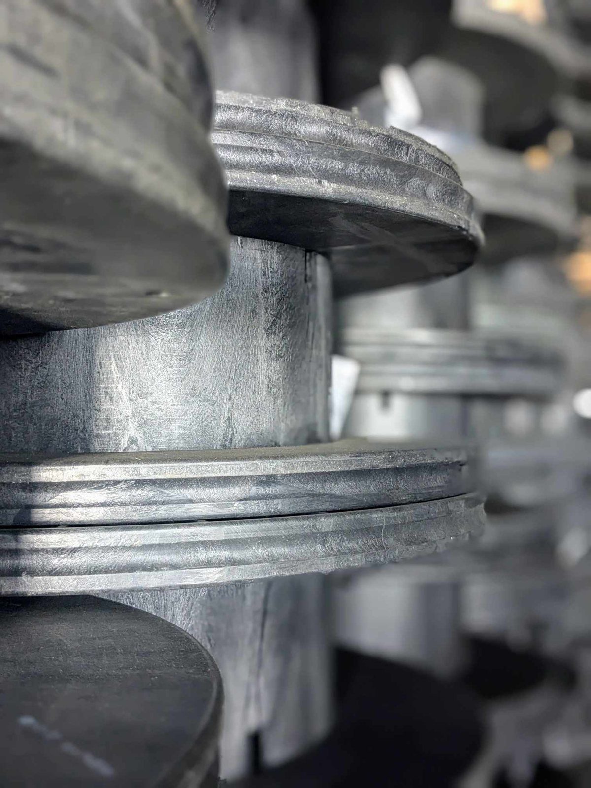

Sustainability
Repairing packaging gives manufacturers more use from the materials they already own.

Reuse first
When a pallet can make another trip, we keep it in circulation. When it reaches the end of its working life, we recycle it. Local craftspeople also find uses for wood packaging that can no longer be refurbished.
Waste and recycling
Murpac reports its waste and recycling efforts with state-sponsored organizations. Across our operations, we divert 2 to 3 tons of waste from landfill each year.
Explore our services